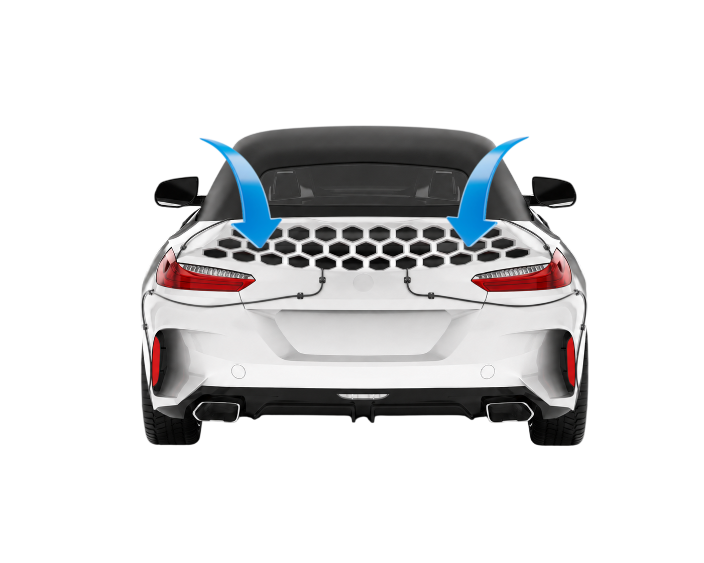
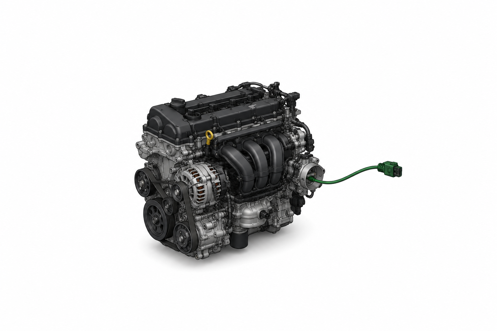

Une technologie d’hydrogène innovante
HydroFlux collecte l’hydrogène produit par les membranes alvéolées puis les achemine via vers le moteur via ses câbles discrets. Cette approche unique renforce le rendement sans changer la mécanique existante.

Conçu pour une intégration simple
Le dispositif HydroFlux se glisse dans le circuit du moteur avec un minimum de modifications. Il est pensé pour s’adapter aux voitures modernes tout en gardant un montage propre et modulaire.
Un impact durable sur l'environnement
En améliorant l’efficacité du moteur et en réduisant les rejets, le projet HydroFlux aide les conducteurs à emprunter une voie plus responsable. C’est une solution pensée pour aujourd’hui et demain.